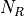
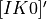
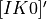

RoadRunner API Reference¶
This is the API Reference page for the module: roadrunner
The RoadRunner SBML Simulation Engine Python API, (c) 2009-2016 Endre Somogyi and Herbert Sauro
Configuration¶
Many of RoadRunner classes use a number of configuration parameters. Most of these can be set using the Config class. The values stored in the Config class only determine the default values of parameters. The Config class will look in the following locations for the config file, and will load the values from the first config file it finds. If it does not find a config file in one of the following locations, a default set of configuration parameters are used. The search locations of the config file are:
#1: the ROADRUNNER_CONFIG environment variable
#2: try the user’s home directory for roadrunner.conf, i.e.:
/Users/andy/roadrunner.conf
#3: try the user’s home directory for .roadrunner.conf, i.e.:
/Users/andy/.roadrunner.conf
#4: try the same directory as the roadrunner shared library, this will be the same directory as the python _roadrunner.pyd python extension module, i.e.:
/Users/andy/local/lib/roadrunner.conf
#5: try one directory up from the where the shared library or program is at, i.e.:
/Users/andy/local/roadrunner.conf
The conf file is just a plain text file of where each line may be key / value pair separated by a “:”, i.e.
KEY_NAME : Value
Any line that does not match this format is ignored, and keys that are not found are also ignored. Therefore, any line that does not start with a word character is considered a comment.
All of the configuration management functions are static method of the Config class, and all of the configuration keys are static attributes of the Config class, these are documented in the Configuration Functions section.
As all of the Config class methods are static, one never instantiates the Config class.
Configuration Functions¶
-
static
Config.setValue(key, value)¶ Set the value of a configuration key. The value must be either a string, integer, double or boolean. If one wanted to turn off moiety conservation (this will not have an effect on already loaded models):
from roadrunner import Config Config.setValue(Config.LOADSBMLOPTIONS_CONSERVED_MOIETIES, False)
Or, other options may be set to Boolean or integer values. To enable an optimization features:
Config.setValue(Config.LOADSBMLOPTIONS_OPTIMIZE_INSTRUCTION_SIMPLIFIER, True)
-
static
Config.getConfigFilePath()¶ If roadrunner was able to find a configuration file on the file system, its full path is returned here. If no file was found, this returns a empty string.
-
static
Config.readConfigFile(path)¶ Read all of the values from a configuration file at the given path. This overrides any previously stored configuration. This allows users to have any number of configuration files and load them at any time. Say someone had to use Windows, and they had a file in their C: drive, this would be loaded via:
Config.readConfigFile("C:/my_config_file.txt")
Note, the forward slash works on both Unix and Windows, using the forward slash eliminates the need to use a double back slash, “\”.
-
static
Config.writeConfigFile(path)¶ Write all of the current configuration values to a file. This could be written to one of the default locations, or to any other location, and re-loaded at a later time.
Available Configuration Parameters¶
All of the configuration parameter keys are static attributes of the Config class and are listed here. The variable type of the parameter is listed after the key name.
-
Config.LOADSBMLOPTIONS_CONSERVED_MOIETIESbool¶ Perform conservation analysis. By default, this attribute is set as False.
This causes a re-ordering of the species, so results generated with this flag enabled can not be compared index wise to results generated otherwise.
Moiety conservation is only compatible with simple models which do NOT have any events or rules which define or alter any floating species, and which have simple constant stoichiometries.
Moiety conservation may cause unexpected results, be aware of what it is before enabling.
Not recommended for time series simulations.
To enable, type:
>>> roadrunner.Config.setValue(roadrunner.Config.LOADSBMLOPTIONS_CONSERVED_MOIETIES, True)
-
Config.LOADSBMLOPTIONS_RECOMPILEbool¶ Should the model be recompiled? The LLVM ModelGenerator maintains a hash table of currently running models. If this flag is NOT set, then the generator will look to see if there is already a running instance of the given model and use the generated code from that one.
If only a single instance of a model is run, there is no need to cache the models, and this can safely be enabled, realizing some performance gains.
-
Config.LOADSBMLOPTIONS_READ_ONLYbool¶ If this is set, then a read-only model is generated. A read-only model can be simulated, but no code is generated to set model values, i.e. parameters, amounts, values, etc…
It takes a finite amount of time to generate the model value setting functions, and if they are not needed, one may see some performance gains, especially in very large models.
-
Config.LOADSBMLOPTIONS_MUTABLE_INITIAL_CONDITIONSbool¶ Generate accessors functions to allow changing of initial conditions.
-
Config.LOADSBMLOPTIONS_OPTIMIZE_GVNbool¶ GVN - This pass performs global value numbering and redundant load elimination contemporaneously.
-
Config.LOADSBMLOPTIONS_OPTIMIZE_CFG_SIMPLIFICATIONbool¶ CFGSimplification - Merge basic blocks, eliminate unreachable blocks, simplify terminator instructions, etc…
-
Config.LOADSBMLOPTIONS_OPTIMIZE_INSTRUCTION_COMBININGbool¶ InstructionCombining - Combine instructions to form fewer, simple instructions. This pass does not modify the CFG, and has a tendency to make instructions dead, so a subsequent DCE pass is useful.
-
Config.LOADSBMLOPTIONS_OPTIMIZE_DEAD_INST_ELIMINATIONbool¶ DeadInstElimination - This pass quickly removes trivially dead instructions without modifying the CFG of the function. It is a BasicBlockPass, so it runs efficiently when queued next to other BasicBlockPass’s.
-
Config.LOADSBMLOPTIONS_OPTIMIZE_DEAD_CODE_ELIMINATIONbool¶ DeadCodeElimination - This pass is more powerful than DeadInstElimination, because it is worklist driven that can potentially revisit instructions when their other instructions become dead, to eliminate chains of dead computations.
-
Config.LOADSBMLOPTIONS_OPTIMIZE_INSTRUCTION_SIMPLIFIERbool¶ InstructionSimplifier - Remove redundant instructions.
-
Config.LOADSBMLOPTIONS_USE_MCJITbool¶ Currently disabled.
Use the LLVM MCJIT JIT engine.
Defaults to false.
The MCJIT is the new LLVM JIT engine, it is not as well tested as the original JIT engine. Does NOT work on LLVM 3.1
-
Config.ROADRUNNER_DISABLE_PYTHON_DYNAMIC_PROPERTIESint¶ RoadRunner by default dynamically generates accessors properties for all SBML symbol names on the model object when it is retrieved in Python. This feature is very nice for interactive use, but can slow things down. If this feature is not needed, it can be disabled here.
-
Config.ROADRUNNER_DISABLE_WARNINGSint¶ Disable SBML conserved moiety warnings.
Conserved Moiety Conversion may cause unexpected behavior, be aware of what it is before enabling.
RoadRunner will issue a warning in steadyState if conservedMoieties are NOT enabled because of a potential singular Jacobian. To disable this warning, set this value to 1
A notice will be issued whenever a document is loaded and conserved moieties are enabled. To disable this notice, set this value to 2.
To disable both the warning and notice, set this value to 3
Rationale for these numbers: This is actual a bit field, disabling the steady state warning value is actually 0b01 << 0 which is 1, and the loading warning is 0b01 << 1 which is 2 and 0b01 & 0b10 is 0b11 which is 3 in decimal.
-
Config.LOADSBMLOPTIONS_PERMISSIVEint¶ Accept some non-valid SBML (such as Booleans in numberic expressions).
For legacy code only. Do not use.
-
Config.MAX_OUTPUT_ROWSint¶ Set the maximum number of rows in the output matrix.
For models with very fine time stepping, the output of simulate can use up all available memory and crash the system. This option provides an upper bound on the maximum number of rows the output can contain. The simulation will be aborted and the output truncated if this value is exceeded.
-
Config.ALLOW_EVENTS_IN_STEADY_STATE_CALCULATIONSbool¶ Enable or disable steady state calculations when a model contains events
If true, steady state calculations will be carried out irrespective of whether events are present or not. If false, steady state calculations will not be carried out in the presence of events.
The Main RoadRunner Class¶
-
class
roadrunner.RoadRunner¶ The main RoadRunner class. Its objects, i.e.
rr = RoadRunner()perform the libRoaRunner functions, i.e.rr.simulate().
-
RoadRunner.__init__(uriOrSBML='', options=None)¶ Creates a new RoadRunner object. If the first argument is specified, it should be a string containing either the contents of an SBML document, or a formatted URI specifying the path or location of a SBML document.
If options is given, it should be a LoadSBMLOptions object.
If no arguments are given, a document may be loaded at any future time using the load method.
- Parameters
uriOrSBML – a URI, local path or SBML document contents.
options – (LoadSBMLOptions) an options object specifying how the SBML document should be loaded
-
RoadRunner.load(uriOrDocument)¶ Loads an SBML document, given a string for file path, URI, or contents.
This method also accepts HTTP URI for remote files, however this feature is currently limited to the Mac version, plan on enabling HTTP loading of SBML documents on Windows and Linux shortly.
Some examples of loading files on Mac or Linux:
>>> r.load("myfile.xml") # load a file from the current directory >>> r.load("/Users/Fred/myfile.xml") # absolute path >>> r.load("http://sbml.org/example_system.xml") # remote file
Or on Windows:
>>> r.load("myfile.xml") # load a file from the current directory >>> r.load("file://localhost/c:/Users/Fred/myfile.xml") # using a URI
One may also load the contents of a document:
>>> myfile = open("myfile.xml, "r") >>> contents = file.read() >>> r.load(contents)
Loading in a raw SBML string is also possible:
>>> sbmlstr = rr.getCurrentSBML() # Or any other properly formatted SBML string block >>> r.load(sbmlstr)
In future version, we will also support loading directly from a libSBML Document object.
- Parameters
uriOrDocument – A string which may be a local path, URI or contents of an SBML document.
-
RoadRunner.saveState(document, option='b')¶ Saves the current state of the RoadRunner instance, e.g. integrator, steady state solver, simulation results, given a string for file path. If no option is given or the option is ‘b’, the state will be stored in a binary format which can be quickly reloaded for later simulation. This binary format is platform specific. It the option is ‘r’, the state will be stored in a human-readable format which can be used for debugging, but cannot be reloaded later.
Some examples of saving binary files on Mac or Linux:
>>> r.saveState("current_state.txt") # save the state to a file from the current directory >>> r.saveState("/Users/Fred/current_state.txt") # absolute path
Or on Windows:
>>> r.saveState("current_state.txt") # save the state to a file from the current directory >>> r.saveState("file://localhost/c:/Users/Fred/current_state.txt") # using a URI
One may also save in a human-readable format:
>>> r.saveState("current_state.txt", 'r')
- Parameters
document – The file path where the current state will be stored
option – an option object specifying how the state should be saved ‘b’ - binary (default) ‘r’ - human-readable
-
RoadRunner.loadState(document)¶ Loads the saved state of a RoadRunner instance, e.g. integrator, steady state solver, simulation results, given a string for file path. All simulation calls after this function will start from the resumed state.
Some examples of reloading binary files on Mac or Linux:
>>> r.loadState("current_state.txt") # load the state from a file from the current directory >>> r.loadState("/Users/Fred/current_state.txt") # absolute path
Or on Windows:
>>> r.loadState("current_state.txt") # load the state from a file from the current directory >>> r.loadState("file://localhost/c:/Users/Fred/current_state.txt") # using a URI
- Parameters
document – The file path where the state of simulation will be loaded from
-
RoadRunner.getCompiler()¶ Returns the JIT
Compilerobject currently being used. This object provides various information about the current processor and system.
-
RoadRunner.getConfigurationXML()¶ Recurse through all of the child configurable objects that this class ones and build an assemble all of their configuration parameters into a single xml document which is returned as a string.
The value of this result depends on what child objects are presently loaded.
-
RoadRunner.getExtendedVersionInfo()¶ Returns
getVersionStr()as well as info about dependent libs versions.
-
RoadRunner.getInfo()¶ Returns info about the current state of the object.
- Return type
str
-
RoadRunner.getInstanceCount()¶ Returns number of currently running RoadRunner instances.
-
RoadRunner.getInstanceID()¶ Returns the instance id when there are multiple instances of RoadRunner.
-
RoadRunner.getIntegrator()¶ Returns the solver instance. See
roadrunner.Solver. For more information on the possible settings, see Solvers.
-
RoadRunner.getIntegratorByName(name)¶ Returns the solver instance by given name. See
roadrunner.Solver. For more information on the possible settings, see Solvers.- Parameters
name (str) – Name of the integrator
-
RoadRunner.getAvailableIntegrators()¶ Returns a list of names of available integrators.
-
RoadRunner.getExistingIntegratorNames()¶ Returns a list of names of all integrators.
-
RoadRunner.getParamPromotedSBML(*args)¶ Takes an SBML document (in textual form) and changes all of the local parameters to be global parameters.
- Parameters
SBML (str) – the contents of an SBML document
- Return type
str
-
RoadRunner.getCurrentSBML()¶ Returns the SBML with the current model parameters. This is different than
getSBML()which returns the original SBML. This may optionally up or down-convert the document to a different version, if the level and version arguments are non-zero. If both arguments are zero, then the document is left alone and the original version is returned.- Return type
str
-
RoadRunner.getSBML()¶ Returns the original SBML model that was loaded into roadrunner. If the model is edited by methods in editing section, it will return the most updated model with the initial model parameters.
- Return type
str
-
RoadRunner.setIntegrator(name)¶ Sets specific integrator. For more information on the possible settings, see Solvers.
- Parameters
name (str) – name of the integrator.
-
RoadRunner.setIntegratorSetting(name, key, value)¶ Sets settings for a specific integrator. See
roadrunner.Solver. For more information on the possible settings, see Solvers.- Parameters
name (str) – name of the integrator.
key (str) – name of the setting.
value (const) – value of the setting.
Selections¶
-
RoadRunner.getIds()¶ Return a list of selection ids that this object can select on.
- Return type
list
-
RoadRunner.getValue(sel)¶ Returns the value for a given selection. For more information on accepted selection types see Selecting Values.
- Parameters
sel (str or SelectionRecord) – a selection that is either a string or a SelectionRecord that was obtained from createSelection
-
RoadRunner.getSelectedValues()¶ returns the values of the current timecourse selections for the current state of the model
- Return type
numpy.ndarray
-
RoadRunner.timeCourseSelections¶ Get or set the list of current selections used for the time course simulation result columns. For more information on accepted selection types, see Selecting Values.
>>> rr.timeCourseSelections = ['time', 'S1', 'S2'] >>> rr.timeCourseSelections ['time', 'S1', 'S2']
-
RoadRunner.createSelection(sel)¶ Create a new selection based on a selection string
- Return type
-
RoadRunner.resetSelectionLists()¶ Resets time course and steady state selection lists to defaults
Model Access¶
-
RoadRunner.isModelLoaded()¶ Return True if model was loaded; False otherwise
-
RoadRunner.modelNone¶ Get the currently loaded model. The model object contains the entire state of the SBML model.
-
RoadRunner.getModel()¶ Function form of the RoadRunner.model property, identical to model.
-
RoadRunner.clearModel()¶ Clears the currently loaded model and all associated memory. Returns True if memory was freed, False if no model was loaded in the first place.
>>> r.isModelLoaded() True >>> r.clearModel() >>> r.isModelLoaded() False
-
RoadRunner.oneStep(startTime, stepSize)¶ Carry out a one step integration of the model. The method takes two arguments, the current time and the step size to use in the integration. Returs the new time which will be currentTime + StepSize:
newTime = rr.oneStep (10, 0.5)
-
RoadRunner.internalOneStep(startTime, stepSize, reset)¶ Carry out a single internal solver integration step. The method takes three arguments, the current time and the step size to use in the integration and reset. Reset defaults to true, set to false to stop integrator instance from restarting. Returns the end time.
-
RoadRunner.reset()¶ Resets time, all floating species, and rates to their initial values. Does NOT reset changed global parameters.
-
RoadRunner.resetAll()¶ Resets time, all floating species, and rates to their CURRENT initial values. Also resets all global parameters back to the values they had when the model was first loaded. “Current” initial values are set by using
r.setValue('init(S1)', 5)which sets a species named S1 to have current initial value of 5. Note it is NOT the initial values of when the model was first loaded in.
-
RoadRunner.resetParameter()¶ Resets only global parameters to their CURRENT initial values.
-
RoadRunner.resetToOrigin()¶ Resets the model back to the state it was when FIRST loaded. The scope of this reset includes all initial values and parameters (everything).
-
RoadRunner.setConfigurationXML(*args)¶ Given a xml document, which should have been returned from getConfigurationXML, this method recurses though all the child configurable elements and sets their configuration to the values specified in the document.
- Parameters
xml (str) – the contents of an xml document.
-
RoadRunner.conservedMoietyAnalysis¶ Enables / Disables conserved moiety analysis (boolean).
If this is enabled, the SBML document (either current, or one about to be loaded) is converted using the ConservedMoietyConverter. All of the linearly dependent species are replaced with assignment rules and a new set of conserved moiety parameters are introduced.
To enable, type:
>>> r.conservedMoietyAnalysis = True
Model Editing¶
Easy edit to the model without modifying and reloading sbml files.
-
RoadRunner.addSpecies(sid, compartment, initValue, substanceUnits, forceRegenerate)¶ Add a species to the current model. Note that the species to be added must have an ID that did not existed in the model. The given compartment must also exist in the model.
Default substanceUnits is “concentration”, which will set initValue as initial concentration of the new species. Other substanceUnits will set initValue as initial amount of the new species.
forceRegenerate is a boolean value that indicates whether the new model will be regenerated. Its default value is true, which means to regenerate model every time after this function is called. Note that regenerating model is time-consuming. To save time for editing model for multiple times, one could set this flag to false excepting for the last call, so that Roadrunner will only regenerate the model once after all editings are completed.
For example,
>>> r.addSpecies("s1", "compartment", 0.1, "concentration", False) # it will not regenerate the model, nothing actually happened >>> r.addSpecies("s2", "compartment", 0.1, "concentration", True) # new model is generated and saved
- Parameters
sid (str) – the ID of the species to be added
compartment (str) – the compartment of the species to be added
initValue (double) – the initial amount or concentration of the species to be added
substanceUnits (str) – the substance unit of the species to be added
forceRegenerate (bool) – indicate whether the new model is regenerated after this function call
-
RoadRunner.removeSpecies(sid, forceRegenerate)¶ Remove a species from the current model. Note that the given species must exist in the current model.
All reactions related to this species(as reactants, products or modifiers or used in stoichiometry) will be removed. Kinetic law used this species in the math formula will be unset. All function definitions, constraints, initial assignments and rules related to this species (as variables or used in math formula) will be removed. All events used this speices in trigger formula will be removed. Priority and delay used this sepcies in the math formula will be unset. All event assignment related to this species(as variables or used in math formula) will be removed.
If any global parameters become uninitialized during this process, i.e, has no initial assignment or assignment rule, they will be removed recursively following the rules in removeParameter().
forceRegenerate is a boolean value that indicates whether the new model will be regenerated. Its default value is true, which means to regenerate model every time after this function is called. Note that regenerating model is time-consuming. To save time for editing model for multiple times, one could set this flag to false excepting for the last call, so that Roadrunner will only regenerate the model once after all editings are completed.
For example,
>>> r.removeSpecies("s1", false) # it will not regenerate the model, nothing actually happened >>> r.removeSpecies("s2", true) # new model is generated and saved
- Parameters
sid (str) – the ID of the species to be removed
forceRegenerate (bool) – indicate whether the new model is regenerated after this function call
-
RoadRunner.addReaction(rid, reactants, products, kineticLaw, forceRegenerate)¶ Add a reaction to the current model by passing its info as parameters. Note that the reaction to be added must have an ID that did not existed in the model.
forceRegenerate is a boolean value that indicates whether the new model will be regenerated. Its default value is true, which means to regenerate model every time after this function is called. Note that regenerating model is time-consuming. To save time for editing model for multiple times, one could set this flag to false excepting for the last call, so that Roadrunner will only regenerate the model once after all editings are completed.
For example,
>>> r.addReaction("r1", ["s1"], ["s2"], "s1 * k1", False) # it will not regenerate the model, nothing actually happened >>> r.addReaction("r2", ["s2"], ["s1"], "s2 * k1", True) # new model is generated and saved
- Parameters
rid (str) – the ID of the reaction to be added
reactants (list) – the list of reactants ID of reaction to be added
products (list) – the list of products ID of reaction to be added
kineticLaw (str) – the kinetic formular of reaction to be added
forceRegenerate (bool) – indicate whether the new model is regenerated after this function call
-
RoadRunner.addReaction(sbmlRep, forceRegenerate)¶ Add a reaction to the current model by passing a sbml repesentation as parameter. Note that the reaction to be added must have an ID that did not existed in the model.
forceRegenerate is a boolean value that indicates whether the new model will be regenerated. Its default value is true, which means to regenerate model every time after this function is called. Note that regenerating model is time-consuming. To save time for editing model for multiple times, one could set this flag to false excepting for the last call, so that Roadrunner will only regenerate the model once after all editings are completed.
- Parameters
sbmlRep (str) – the SBML representation (i.e. a reaction tag) describing the reaction to be added
forceRegenerate (bool) – indicate whether the new model is regenerated after this function call
-
RoadRunner.removeReaction(rid, forceRegenerate)¶ Remove a reaction from the current model. Note that the given reaction must exist in the current model.
forceRegenerate is a boolean value that indicates whether the new model will be regenerated. Its default value is true, which means to regenerate model every time after this function is called. Note that regenerating model is time-consuming. To save time for editing model for multiple times, one could set this flag to false excepting for the last call, so that Roadrunner will only regenerate the model once after all editings are completed.
For example,
>>> r.removeReaction("r1", False) # it will not regenerate the model, nothing actually happened >>> r.removeReaction("r2", True) # new model is generated and saved
- Parameters
rid (str) – the ID of the reaction to be removed
forceRegenerate (bool) – indicate whether the new model is regenerated after this function call
-
RoadRunner.addParameter(pid, value, forceRegenerate)¶ Add a parameter to the current model. Note that the parameter to be added must have an ID that did not existed in the model.
forceRegenerate is a boolean value that indicates whether the new model will be regenerated. Its default value is true, which means to regenerate model every time after this function is called. Note that regenerating model is time-consuming. To save time for editing model for multiple times, one could set this flag to false excepting for the last call, so that Roadrunner will only regenerate the model once after all editings are completed.
For example,
>>> r.addParameter("p1", 0.1, False) # it will not regenerate the model, nothing actually happened >>> r.addParameter("p2", 0.1, True) # new model is generated and saved
- Parameters
pid (str) – the ID of the parameter to be added
value (double) – the initial value of the parameter to be added
forceRegenerate (bool) – indicate whether the new model is regenerated after this function call
-
RoadRunner.removeParameter(pid, forceRegenerate)¶ Remove a parameter from the current model. Note that the given parameter must exist in the current model.
All reactions related to this parameter(used in stoichiometry) will be removed. Kinetic law used this parameter in the math formula will be unset. All function definitions, constraints, initial assignments and rules related to this parameter (as variables or used in math formula) will be removed. All events used this parameter in trigger formula will be removed. Priority and delay used this parameter in the math formula will be unset. All event assignment related to this parameter(as variables or used in math formula) will be removed.
If any global parameters become uninitialized during this process, i.e, has no initial assignment or assignment rule, they will be removed recursively following the above rules.
forceRegenerate is a boolean value that indicates whether the new model will be regenerated. Its default value is true, which means to regenerate model every time after this function is called. Note that regenerating model is time-consuming. To save time for editing model for multiple times, one could set this flag to false excepting for the last call, so that Roadrunner will only regenerate the model once after all editings are completed.
For example,
>>> r.removeParameter("p1", False) # it will not regenerate the model, nothing actually happened >>> r.removeParameter("p2", True) # new model is generated and saved
- Parameters
pid (str) – the ID of the parameter to be removed
forceRegenerate (bool) – indicate whether the new model is regenerated after this function call
-
RoadRunner.addCompartment(cid, initVolume, forceRegenerate)¶ Add a compartment to the current model. Note that the compartment to be added must have an ID that did not existed in the model.
forceRegenerate is a boolean value that indicates whether the new model will be regenerated. Its default value is true, which means to regenerate model every time after this function is called. Note that regenerating model is time-consuming. To save time for editing model for multiple times, one could set this flag to false excepting for the last call, so that Roadrunner will only regenerate the model once after all editings are completed.
For example,
>>> r.addCompartment("c1", 0.1, False) # it will not regenerate the model, nothing actually happened >>> r.addCompartment("c2", 0.1, True) # new model is generated and saved
- Parameters
cid (str) – the ID of the compartment to be added
initVolume (double) – the initial volume of the compartment to be added
forceRegenerate (bool) – indicate whether the new model is regenerated after this function call
-
RoadRunner.removeCompartment(cid, forceRegenerate)¶ Remove a compartment from the current model. Note that the given compartment must exist in the current model.
All reactions related to this compartment(used in stoichiometry) will be removed. Kinetic law used this compartment in the math formula will be unset. All function definitions, constraints, initial assignments and rules related to this compartment (as variables or used in math formula) will be removed. All events used this compartment in trigger formula will be removed. Priority and delay used this compartment in the math formula will be unset. All event assignment related to this compartment(as variables or used in math formula) will be removed.
If any global parameters become uninitialized during this process, i.e, has no initial assignment or assignment rule, they will be removed recursively following the rules in removeParameter().
forceRegenerate is a boolean value that indicates whether the new model will be regenerated. Its default value is true, which means to regenerate model every time after this function is called. Note that regenerating model is time-consuming. To save time for editing model for multiple times, one could set this flag to false excepting for the last call, so that Roadrunner will only regenerate the model once after all editings are completed.
For example,
>>> r.removeCompartment("c1", False) # it will not regenerate the model, nothing actually happened >>> r.removeCompartment("c2", True) # new model is generated and saved
- Parameters
cid (str) – the ID of the compartment to be removed
forceRegenerate (bool) – indicate whether the new model is regenerated after this function call
-
RoadRunner.setKineticLaw(rid, kineticLaw, forceRegenerate)¶ Set hte kinetic law for an existing reaction in the current model. Note that given reaction must exist in the model.
forceRegenerate is a boolean value that indicates whether the new model will be regenerated. Its default value is true, which means to regenerate model every time after this function is called. Note that regenerating model is time-consuming. To save time for editing model for multiple times, one could set this flag to false excepting for the last call, so that Roadrunner will only regenerate the model once after all editings are completed.
For example,
>>> r.setKineticLaw("r1", "s1 * k1", False) # it will not regenerate the model, nothing actually happened >>> r.setKineticLaw("r2", "s2 * k1", True) # new model is generated and saved
- Parameters
rid (str) – the ID of the reaction to be modified
kineticLaw (str) – the kinetic formular of reaction to be set
forceRegenerate (bool) – indicate whether the new model is regenerated after this function call
-
RoadRunner.addAssignmentRule(vid, formula, forceRegenerate)¶ Add an assignment rule for a variable to the current model.
forceRegenerate is a boolean value that indicates whether the new model will be regenerated. Its default value is true, which means to regenerate model every time after this function is called. Note that regenerating model is time-consuming. To save time for editing model for multiple times, one could set this flag to false excepting for the last call, so that Roadrunner will only regenerate the model once after all editings are completed.
For example,
>>> r.addAssignmentRule("s1", "s1 * k1", False) # it will not regenerate the model, nothing actually happened >>> r.addAssignmentRule("s2", "s2 * k1", True) # new model is generated and saved
- Parameters
vid (str) – the ID of the variable that the new rule assigns formula to
formula (str) – the math formula of assignment rule to be added
forceRegenerate (bool) – indicate whether the new model is regenerated after this function call
-
RoadRunner.addRateRule(vid, formula, forceRegenerate)¶ Add a rate rule for a variable to the current model.
forceRegenerate is a boolean value that indicates whether the new model will be regenerated. Its default value is true, which means to regenerate model every time after this function is called. Note that regenerating model is time-consuming. To save time for editing model for multiple times, one could set this flag to false excepting for the last call, so that Roadrunner will only regenerate the model once after all editings are completed.
For example,
>>> r.addRateRule("s1", "k1", False) # it will not regenerate the model, nothing actually happened >>> r.addRateRule("s2", "k1", True) # new model is generated and saved
- Parameters
vid (str) – the ID of the variable that the new rule assigns formula to
formula (str) – the math formula of rate rule to be added
forceRegenerate (bool) – indicate whether the new model is regenerated after this function call
-
RoadRunner.removeRules(vid, forceRegenerate)¶ Remove all rules for a variable from the current model, including assignment and rate rules. Note that the given variable must have at least one rule in the current model.
If any global parameters become uninitialized during this process, i.e, has no initial assignment or assignment rule, they will be removed recursively following the rules in removeParameter().
forceRegenerate is a boolean value that indicates whether the new model will be regenerated. Its default value is true, which means to regenerate model every time after this function is called. Note that regenerating model is time-consuming. To save time for editing model for multiple times, one could set this flag to false excepting for the last call, so that Roadrunner will only regenerate the model once after all editings are completed.
For example,
>>> r.removeRules("s1", False) # it will not regenerate the model, nothing actually happened >>> r.removeRules("s2", True) # new model is generated and saved
- Parameters
vid (str) – the ID of the variables that rules assign formula to
forceRegenerate (bool) – indicate whether the new model is regenerated after this function call
-
RoadRunner.addEvent(eid, useValuesFromTriggerTime, trigger, forceRegenerate)¶ Add an event to the current model. Note that the event to be added must have an ID that did not existed in the model.
forceRegenerate is a boolean value that indicates whether the new model will be regenerated. Its default value is true, which means to regenerate model every time after this function is called. Note that regenerating model is time-consuming. To save time for editing model for multiple times, one could set this flag to false excepting for the last call, so that Roadrunner will only regenerate the model once after all editings are completed.
For example,
>>> r.addEvent("e1", False, "s1 > 0", False) # it will not regenerate the model, nothing actually happened >>> r.addEvent("e2", False, "s2 == s1", True) # new model is generated and saved
- Parameters
eid (str) – the ID of the event to be added
useValuesFromTriggerTime (bool) – indicate the moment at which the event’s assignments are to be evaluated
trigger (str) – the math formula of event trigger
forceRegenerate (bool) – indicate whether the new model is regenerated after this function call
-
RoadRunner.addTrigger(eid, trigger, forceRegenerate)¶ Add trigger to an existing event in the model. Note that the given event must exist in the current model. If the given event already has a trigger object, the given trigger will replace the old trigger of the event.
forceRegenerate is a boolean value that indicates whether the new model will be regenerated. Its default value is true, which means to regenerate model every time after this function is called. Note that regenerating model is time-consuming. To save time for editing model for multiple times, one could set this flag to false excepting for the last call, so that Roadrunner will only regenerate the model once after all editings are completed.
For example,
>>> r.addTrigger("e1", "s1 > 0", False) # it will not regenerate the model, nothing actually happened >>> r.addTrigger("e2", "s2 == s1", True) # new model is generated and saved
- Parameters
eid (str) – the ID of the event to add the trigger to
trigger (str) – the math formula of event trigger
forceRegenerate (bool) – indicate whether the new model is regenerated after this function call
-
RoadRunner.addPriority(eid, priority, forceRegenerate)¶ Add priority to an existing event in the model. Note that the given event must exist in the current model. If the given event already has a priority object, the given priority will replace the old priority of the event.
forceRegenerate is a boolean value that indicates whether the new model will be regenerated. Its default value is true, which means to regenerate model every time after this function is called. Note that regenerating model is time-consuming. To save time for editing model for multiple times, one could set this flag to false excepting for the last call, so that Roadrunner will only regenerate the model once after all editings are completed.
- Parameters
eid (str) – the ID of the event to add the priority to
priority (str) – the math formula of event priority
forceRegenerate (bool) – indicate whether the new model is regenerated after this function call
-
RoadRunner.addDelay(eid, delay, forceRegenerate)¶ Add delay to an existing event in the model. Note that the given event must exist in the current model. If the given event already has a delay object, the given delay will replace the old delay of the event.
forceRegenerate is a boolean value that indicates whether the new model will be regenerated. Its default value is true, which means to regenerate model every time after this function is called. Note that regenerating model is time-consuming. To save time for editing model for multiple times, one could set this flag to false excepting for the last call, so that Roadrunner will only regenerate the model once after all editings are completed.
- Parameters
eid (str) – the ID of the event to add the delay to
delay (str) – the math formula of event delay
forceRegenerate (bool) – indicate whether the new model is regenerated after this function call
-
RoadRunner.addEventAssignment(eid, vid, formula, forceRegenerate)¶ Add an event assignment to an existing event in the model. Note that the given event must exist in the current model.
forceRegenerate is a boolean value that indicates whether the new model will be regenerated. Its default value is true, which means to regenerate model every time after this function is called. Note that regenerating model is time-consuming. To save time for editing model for multiple times, one could set this flag to false excepting for the last call, so that Roadrunner will only regenerate the model once after all editings are completed.
For example,
>>> r.addEventAssignment("e1", "s1", "k1", False) # it will not regenerate the model, nothing actually happened >>> r.addEventAssignment("e2", "s2", "s1", True) # new model is generated and saved
- Parameters
eid (str) – the ID of the event to add the event assignment to
vid (str) – the ID of the variables that assignment assigns formula to
formula (str) – the math formula of event assignment
forceRegenerate (bool) – indicate whether the new model is regenerated after this function call
-
RoadRunner.removeEventAssignment(eid, vid, forceRegenerate)¶ Add all event assignments for a variable from an existing event in the model. Note that the given event must exist in the current model and given variable must have an event assignment in the given event.
forceRegenerate is a boolean value that indicates whether the new model will be regenerated. Its default value is true, which means to regenerate model every time after this function is called. Note that regenerating model is time-consuming. To save time for editing model for multiple times, one could set this flag to false excepting for the last call, so that Roadrunner will only regenerate the model once after all editings are completed.
For example,
>>> r.removeEventAssignment("e1", "s1", False) # it will not regenerate the model, nothing actually happened >>> r.removeEventAssignment("e2", "s2", True) # new model is generated and saved
- Parameters
eid (str) – the ID of the event
vid (str) – the ID of the variables of the event assignments to be removed
forceRegenerate (bool) – indicate whether the new model is regenerated after this function call
-
RoadRunner.removeEvent(eid, forceRegenerate)¶ Add an event from the current model. Note that the given event must exist in the current model.
If any global parameters become uninitialized during this process, i.e, has no initial assignment or assignment rule, they will be removed recursively following the rules in removeParameter().
forceRegenerate is a boolean value that indicates whether the new model will be regenerated. Its default value is true, which means to regenerate model every time after this function is called. Note that regenerating model is time-consuming. To save time for editing model for multiple times, one could set this flag to false excepting for the last call, so that Roadrunner will only regenerate the model once after all editings are completed.
For example,
>>> r.removeEvent("e1", False) # it will not regenerate the model, nothing actually happened >>> r.removeEvent("e2", True) # new model is generated and saved
- Parameters
eid (str) – the ID of the event to be removed
forceRegenerate (bool) – indicate whether the new model is regenerated after this function call
Simulation¶
Fast and easy time series simulations is one of the main objectives of the RoadRunner project.
All simulation related tasks can be accomplished with the single simulate method.
-
RoadRunner.simulate(*args, **kwargs)¶ Simulate current SBML model.
simulate accepts up to five positional arguments.
The first five (optional) arguments are treated as:
1: Start Time, if this is a number.
2: End Time, if this is a number.
3: Number of points, if this is a number.
4: List of Selections. A list of variables to include in the output, e.g.
['time','A']for a model with speciesA. More below.5: output file path. The file to which simulation results will be written. If this is specified and nonempty, simulation output will be written to output_file every Config::K_ROWS_PER_WRITE generated. Note that simulate() will not return the result matrix if it is writing to output_file. It will also not keep any simulation data, so in that case one should not call
r.plot()without arguments. This should be specified when one cannot, or does not want to, keep the entire result matrix in memory.All five of the positional arguments are optional. If any of the positional arguments are a list of string instead of a number, then they are interpreted as a list of selections.
There are a number of ways to call simulate.
- 1: With no arguments. In this case, the current set of options from the previous
simulatecall will be used. If this is the first timesimulateis called, then a default set of values is used. The default set of values are (start = 0, end = 5, points = 51).
2: With up to five positions arguments, described above.
Finally, you can pass steps keyword argument instead of points.
steps (Optional) Number of steps at which the output is sampled where the samples are evenly spaced. Steps = points-1. Steps and points may not both be specified.
- Returns
a numpy array with each selected output time series being a column vector, and the 0’th column is the simulation time; or if output_file is specified and nonempty, a message string
- Return type
numpy.ndarray
-
RoadRunner.gillespie(start, end, steps)¶ Run a Gillespie stochastic simulation.
Use
RoadRunner.reset()to reset the model each time.- Parameters
start – start time
end – end time
steps – number of steps
- Returns
a numpy array with each selected output time series being a column vector, and the 0’th column is the simulation time.
- Return type
numpy.ndarray
Examples:
Simulate from time zero to 40 time units
>>> result = r.gillespie (0, 40)
Simulate on a grid with 10 points from start 0 to end time 40
>>> result = r.gillespie (0, 40, 10)
Simulate from time zero to 40 time units using the given selection list
>>> result = r.gillespie (0, 40, [‘time’, ‘S1’])
Simulate from time zero to 40 time units, on a grid with 20 points using the given selection list
>>> result = r.gillespie (0, 40, 20, [‘time’, ‘S1’])
-
RoadRunner.plot(result=None, loc='upper left', show=True)¶ Plot results from a simulation carried out by the simulate or gillespie functions.
To plot data currently held by roadrunner that was generated in the last simulation, use:
>>> r.plot()
If you are using Tellurium, see tellurium.ExtendedRoadRunner.plot which supports extra arguements.
- Parameters
result (numpy.ndarray) – Data returned from a simulate or gillespie call
loc (str) – string representing the location of legend i.e. “upper right”
-
Roadrunner.getSimulationData()¶ Returns the array of simulated data. When simulation has not been run, the function will return an empty array.
Steady State¶
-
class
RoadRunner.SteadyStateSolver¶ RoadRunner.SteadyStateSolver class.
-
RoadRunner.steadyStateSelections¶ A list of SelectionRecords which determine what values are used for a steady state calculation. This list may be set by assigning a list of valid selection symbols:
>>> r.steadyStateSelections = ['S1', '[S2]', 'P1'] >>> r.steadyStateSelections ['S1', '[S2]', 'P1']
-
RoadRunner.steadyState()¶ Attempts to evaluate the steady state for the model. The method returns a value that indicates how close the solution is to the steady state. The smaller the value the better. Values less than 1E-6 usually indicate a steady state has been found. If necessary the method can be called a second time to improve the solution.
- Returns
the sum of squares of the steady state solution.
- Return type
double
-
RoadRunner.getSteadyStateValues()¶ Performs a steady state calculation (evolves the system to a steady state), then calculates and returns the set of values specified by the steady state selections.
- Returns
a numpy array corresponding to the values specified by steadyStateSelections
- Return type
numpy.ndarray
-
RoadRunner.getSteadyStateValuesNamedArray()¶ Performs a steady state calculation (evolves the system to a steady state), then calculates and returns the set of values specified by the steady state selections with all necessary labels.
- Returns
a NamedArray corresponding to the values specified by steadyStateSelections
- Return type
NamedArray
-
RoadRunner.getSteadyStateSolver()¶ Returns the steady state solver which is currently being used.
-
RoadRunner.steadyStateSolverExists(name)¶ Checks whether a steady state solver exists.
- Parameters
name (str) – name of a steady state solver
Metabolic control analysis¶
In the special case when an SBML model is a purely reaction kinetics model – no rate rules, no assignment rules for chemical species, and time invariant stoichiometry, specialized analysis methods related to metabolic control analysis are applicable. These methods are described in this section.
-
RoadRunner.getCC(variable, parameter)¶ Returns a scaled control coefficient with respect to a global parameter.
For example:
rr.getCC ('J1', 'Vmax') rr.getCC ('S1', 'Xo') rr.getCC ('S2', 'Km')
The first returns a flux control coefficient with respect to flux J1. The second and third return concentration control coefficients with respect to species S1 and S2.
- Parameters
variable – The id of a dependent variable of the coefficient, for example a reaction or species concentration.
parameter – The id of the independent parameter, for example a kinetic constant or boundary species
- Returns
the value of the scaled control coefficient.
- Return type
double
-
RoadRunner.getuCC(variableId, parameterId)¶ Get unscaled control coefficient with respect to a global parameter.
- Parameters
variableId – The id of a dependent variable of the coefficient, for example a reaction or species concentration.
parameterId – The id of the independent parameter, for example a kinetic constant or boundary species
- Returns
the value of the unscaled control coefficient.
- Return type
double
-
RoadRunner.getEE(reactionId, parameterId, steadyState=True)¶ Retrieve a single elasticity coefficient with respect to a global parameter.
For example:
x = rr.getEE ('J1', 'Vmax')
calculates elasticity coefficient of reaction ‘J1’ with restpect to parameter ‘Vmax’.
- Parameters
variable (str) – A reaction Id
parameter (str) – The independent parameter, for example a kinetic constant, floating or boundary species
steadyState (Boolean) – should the steady state value be computed.
-
RoadRunner.getuEE(reactionId, parameterId)¶ Get unscaled elasticity coefficient with respect to a global parameter or species.
-
RoadRunner.getEigenValueIds()¶ Returns a list of selection symbols for the eigenvalues of the floating species. The eigen value selection symbol is
eigen(XX), whereXXis the floating species name.
-
RoadRunner.getFullEigenValues()¶ Calculates the eigen values of the Full Jacobian as a real matrix, first column real part, second column imaginary part.
Note, only valid for pure reaction kinetics models (no rate rules, no floating species rules and time invariant stoichiometry).
- Return type
numpy.ndarray
-
RoadRunner.getReducedEigenValues()¶ Calculates the eigen values of the Reduced Jacobian as a real matrix, first column real part, second column imaginary part.
Only valid if moiety conversion is enabled.
Note, only valid for pure reaction kinetics models (no rate rules, no floating species rules and time invariant stoichiometry).
- Return type
numpy.ndarray
-
RoadRunner.getFullJacobian()¶ Compute the full Jacobian at the current operating point.
This is the Jacobian of ONLY the floating species.
-
RoadRunner.getReducedJacobian()¶ Returns the reduced Jacobian for the independent species. This matrix will be non-singular for models that include moiety-conserved cycles.
- Return type
numpy.ndarray
-
RoadRunner.getScaledConcentrationControlCoefficientMatrix()¶ Returns the m by n matrix of scaled concentration control coefficients where m is the number of floating species and n the number of reactions.
- Return type
numpy.ndarray
-
RoadRunner.getScaledFloatingSpeciesElasticity(reactionId, speciesId)¶ Returns the scaled elasticity for a given reaction and given species.
- Parameters
reactionId (str) – the SBML id of a reaction.
speciesId (str) – the SBML id of a species.
- Return type
double
-
RoadRunner.getUnscaledParameterElasticity(reactionId, parameterId)¶ Returns the unscaled elasticity for a named reaction with respect to a named parameter
- Parameters
reactionId (str) – the SBML id of a reaction.
parameterId (str) – the SBML id of a parameter.
- Return type
double
-
RoadRunner.getUnscaledConcentrationControlCoefficientMatrix()¶ Returns the unscaled concentration control coefficient matrix.
-
RoadRunner.getUnscaledElasticityMatrix()¶ Returns the unscaled species elasticity matrix at the current operating point.
-
RoadRunner.getUnscaledFluxControlCoefficientMatrix()¶ Returns the unscaled flux control coefficient matrix.
-
RoadRunner.getUnscaledSpeciesElasticity(reactionIndx, speciesIndx)¶ Get a single species elasticity value.
- Parameters
reactionIndx (int) – index of reaction
speciesIndx (int) – index of species.
-
RoadRunner.getScaledFluxControlCoefficientMatrix()¶ Returns the n by n matrix of scaled flux control coefficients where n is the number of reactions.
- Return type
numpy.ndarray
-
RoadRunner.getScaledElasticityMatrix()¶ Returns the scaled elasticity matrix at the current operating point.
- Return type
numpy.ndarray
-
RoadRunner.setDiffStepSize(val)¶ Sets the differential step size used in routines such as
getCC().- Parameters
val – differential step size
Stoichiometric Analysis¶
-
RoadRunner.getFullStoichiometryMatrix()¶ Get the stoichiometry matrix that coresponds to the full model, even it it was converted via conservation conversion.
-
RoadRunner.getReducedStoichiometryMatrix()¶ Get the reduced stochiometry matrix. If conservation conversion is enabled, this is the matrix that coresponds to the independent species.
A synonym for getNrMatrix().
-
RoadRunner.getConservationMatrix()¶ Returns a conservation matrix
 which is a
which is a  matrix
where is the number of conservation laws and
matrix
where is the number of conservation laws and  the number of species.
the number of species.
-
RoadRunner.getL0Matrix()¶ Returns the L0 matrix for the current model. The L0 matrix is an (m-r) by r matrix that expresses the dependent reaction rates in terms of the independent rates. m is the number of floating species and r is the rank of the stoichiometry matrix.
- Return type
numpy.ndarray
-
RoadRunner.getLinkMatrix()¶ Returns the full link matrix, L for the current model. The Link matrix is an m by r matrix where m is the number of floating species and r the rank of the stoichiometric matrix, N.
- Return type
numpy.ndarray
-
RoadRunner.getNrMatrix()¶ Returns the reduced stoichiometry matrix, , which will have only r rows where r is the rank of the full stoichiometry matrix. The matrix will be reordered such that the rows of are independent.
- Return type
numpy.ndarray
-
RoadRunner.getKMatrix()¶ Returns the K matrix,
 , (right nullspace of Nr)
The K matrix has the structure, 
, (right nullspace of Nr)
The K matrix has the structure, - Return type
numpy.ndarray
Analysis¶
-
RoadRunner.getFrequencyResponse(startFrequency, numberOfDecades, numberOfPoints, parameterName, variableName, useDB, useHz)¶ Computes the frequency response. Returns a numpy array with three columns. First column is the frequency, second column the amplitude, and the third column the phase.
- Parameters
startFrequency – Start frequency for the first column in the output
numberOfDecades (int) – Number of decades for the frequency range, eg 4 means the frequency span 10,000
numberOfPoints (int) – The number of points to generate in the output
parameterName (str) – The parameter where the input frequency is applied, usually a boundary species, eg ‘Xo’
variableName (str) – The amplitude and phase will be output for this variable, usually a floating species, eg ‘S1’
useDB (boolean) – If true use Decibels on the amplitude axis
useHz (boolean) – If true use Hertz on the x axis, the default is rads/sec
For example:
import tellurium as te import roadrunner from matplotlib import pyplot as plt r = te.loada(""" $Xo -> x1; k1*Xo - k2*x1; x1 -> x2; k2*x1 - k3*x2; x2 ->; k3*x2; k1 = 0.5; k2 = 0.23; k3 = 0.4; Xo = 5; """) r.steadyState() m = r.getFrequencyResponse(0.001, 5, 1000, 'Xo', 'x2', True, False) fig = plt.figure(figsize=(10,4)) ax1 = fig.add_subplot (121) ax1.semilogx (m[:,0], m[:,1], color="blue", linewidth="2") ax1.set_title ('Amplitude') plt.xlabel ('Frequency') ax2 = fig.add_subplot (122) ax2.semilogx (m[:,0], m[:,2], color="blue", linewidth="2") ax2.set_title ('Phase') plt.xlabel ('Frequency') plt.show()
-
RoadRunner.getRatesOfChange()¶ Returns the rates of change of all floating species. The order of species is given by the order of Ids returned by getFloatingSpeciesIds()
- Returns
a named array of floating species rates of change.
- Return type
numpy.ndarray
>>> r.getRatesOfChange() MKKK, MKKK_P, MKK, MKK_P, MKK_PP, MAPK, MAPK_P, MAPK_PP [[ 0.000503289, -0.000503289, 0.537508, -0.0994839, -0.438024, 0.061993, 0.108417, -0.17041]]
-
RoadRunner.getIndependentRatesOfChange()¶ Returns the rates of change of all independent floating species. The order of species is given by the order of Ids returned by getIndependentFloatingSpeciesIds()
- Returns
a named array of independent floating species rates of change.
- Return type
numpy.ndarray
>>> r.getIndependentRatesOfChange() MKK_P, MAPK_P, MKKK, MKK, MAPK [[ -0.0994839, 0.108417, 0.000503289, 0.537508, 0.061993]]
-
RoadRunner.getDependentRatesOfChange()¶ Returns the rates of change of all dependent floating species. The order of species is given by the order of Ids returned by getDependentFloatingSpeciesIds()
- Returns
a named array of dependent floating species rates of change.
- Return type
numpy.ndarray
>>> r.getDependentRatesOfChange() MKK_PP, MKKK_P, MAPK_PP [[ -0.438024, -0.000503289, -0.17041]]
Solver Class¶
-
class
roadrunner.Solver¶ Following functions are supported for a given solver instance which can be obtained by calling RoadRunner.getIntegrator() or RoadRunner.getSteadyStateSolver() methods. There are two types of solvers: Integrators(cvode, gillespie, rk4, rk45) - RoadRunner.Integrator() and Steady State Solvers(nleq2) - RoadRunner.SteadyStateSolver()
-
Solver.getDescription(key)¶ If key = None, returns description of this solver. Else, returns the description associated with a given key.
- Parameters
key (str) – settings name
-
Solver.getDisplayName(key)¶ Returns display name of given key.
- Parameters
key (str) – settings name
-
Solver.getHint(key)¶ If key = None, returns a (user-readable) hint for this solver. Else, Returns the hint associated with a given key.
- Parameters
key (str) – settings name
-
Solver.getName()¶ Returns the name of this solver
-
Solver.getNumParams()¶ Get the number of parameters.
-
Solver.getParamDesc(n)¶ Get the description of the parameter at index n
- Parameters
n (int) – index of parameter
-
Solver.getParamDisplayName(n)¶ Get the display name of the parameter at index n
- Parameters
n (int) – index of parameter
-
Solver.getParamHint(n)¶ Get the hint of the parameter at index n.
- Parameters
n (int) – index of parameter
-
Solver.getParamName(n)¶ Get the display name of the parameter at index n.
- Parameters
n (int) – index of parameter
-
Solver.getSetting(k)¶ Get value of a solver setting
- Parameters
k (str) – settings name
-
Solver.getSettings()¶ Returns a list of all settings for this solver.
-
Solver.getSettingsRepr()¶ Returns the solver settings as a string.
-
Solver.getType(key)¶ Returns the type associated with a given key.
- Parameters
key (str) – settings name
-
Solver.getValue(key)¶ Get the value of an integrator setting.
- Parameters
key (str) – settings name
-
Solver.getValueAsBool(key)¶ Wrapper for
Solver.getValue()which converts output to a specific type- Parameters
key (str) – settings name
-
Solver.getValueAsChar(key)¶ Wrapper for
Solver.getValue()which converts output to a specific type- Parameters
key (str) – settings name
-
Solver.getValueAsDouble(key)¶ Wrapper for
Solver.getValue()which converts output to a specific type- Parameters
key (str) – settings name
-
Solver.getValueAsFloat(key)¶ Wrapper for
Solver.getValue()which converts output to a specific type- Parameters
key (str) – settings name
-
Solver.getValueAsInt(key)¶ Wrapper for
Solver.getValue()which converts output to a specific type- Parameters
key (str) – settings name
-
Solver.getValueAsLong(key)¶ Wrapper for
Solver.getValue()which converts output to a specific type- Parameters
key (str) – settings name
-
Solver.getValueAsString(key)¶ Wrapper for
Solver.getValue()which converts output to a specific type- Parameters
key (str) – settings name
-
Solver.getValueAsUChar(key)¶ Wrapper for
Solver.getValue()which converts output to a specific type- Parameters
key (str) – settings name
-
Solver.getValueAsUInt(key)¶ Wrapper for
Solver.getValue()which converts output to a specific type- Parameters
key (str) – settings name
-
Solver.getValueAsULong(key)¶ Wrapper for
Solver.getValue()which converts output to a specific type- Parameters
key (str) – settings name
-
Solver.hasValue(key)¶ Return true if this setting is supported by the integrator.
- Parameters
key (str) – settings name
-
Solver.resetSettings()¶ Reset all settings to their respective default values.
-
Solver.setSetting(k, v)¶ Set value of a solver setting
- Parameters
k (str) – settings name
v (const) – value of the setting
-
Solver.setValue(key, value)¶ Sets value of a specific setting.
- Parameters
key (str) – settings name
value (const) – value of the setting
-
Solver.settingsPyDictRepr()¶ Returns Python dictionary-style string representation of settings.
-
Solver.syncWithModel(m)¶ Called whenever a new model is loaded to allow integrator to reset internal state
- Parameters
m (object) – new model
-
Solver.toRepr()¶ Return string representation a la Python __repr__ method.
-
Solver.toString()¶ Return a string representation of the solver.
Integrator Class¶
-
class
roadrunner.Integrator¶ An integrator is used to describe the method of carrying out a mathematical integration. Currently, libRoadRunner supports cvode, gillespie, rk4 and rk45 solvers. For solver related methods, refer to http://sys-bio.github.io/roadrunner/python_docs/api_reference.html#solver-class. The following methods are supported by all the Integrators.
-
Integrator.getIntegrationMethod()¶ Gets the method of integration as an integer. (0-Deterministic, 1-Stochastic, 2-Hybrid, 3-Other).
-
Integrator.getListener()¶ Gets the integrator listener.
-
Integrator.integrate(t0, hstep)¶ Main integration routine.
- Parameters
t0 (double) – start time
hstep (double) – time step size
-
Integrator.loadSBMLSettings(filename)¶ Load an SBML settings file and apply the configuration options. Note: Can assign relative and absolute tolerances.
- Parameters
filename (string) – A string which may be a local path, URI or contents of an SBML document.
-
Integrator.restart(t0)¶ Reset time to zero and reinitialize model. Applies events which occur before time zero. Reinitializes CVODE and the executable model.
- Parameters
t0 (double) – start time
-
Integrator.setListener(listener)¶ Sets the integrator listener.
- Parameters
listener – Swig Object of type ‘rr::PyIntegratorListenerPtr *’
-
Integrator.tweakTolerances()¶ Fix tolerances for SBML tests. In order to ensure that the results of the SBML test suite remain valid, this method enforces a lower bound on tolerance values. Sets minimum absolute and relative tolerances to Config::CVODE_MIN_ABSOLUTE and Config::CVODE_MIN_RELATIVE respectively.
-
Integrator.setIndividualTolerance(sid, value)¶ Sets absolute tolerance for individual floating species or variable that has a rate rule. Only used for CVODE Integrator. Note that this tolerance is based on the amount of species, and will be stored in absolute_tolerance.
- Parameters
sid (str) – identifier of individual species or varible that has a rate rule
value (double) – tolerance value to set
-
Integrator.setConcentrationTolerance(value)¶ Sets the tolerance based on concentration of species. Only used for CVODE Integrator. First converts the concentration tolerances to amount tolerances by multiplying the compartment volume of species. Whichever is smaller will be stored in absolute_tolerance and used in the integration process. Note that if a double list is given, the size of list must be equal to numIndFloatingSpecies+numRateRule, including tolerances for each independent floating species that doesn’t have a rate rule followed by tolerances for each variable(including dependent floating species) that has a rate rule. The order of independent floating species and variables is the same as the order how they were defined in species list and rate rule list.
- Parameters
list value (double/double) – tolerance value to set
-
Integrator.getConcentrationTolerance()¶ Gets the tolerance vector based on concentration of species. Only used for CVODE Integrator. The vector includes tolerances for each independent floating species that doesn’t have a rate rule followed by tolerances for each variable(including dependent floating species) that has a rate rule. The order of independent floating species and variables is the same as the order how they were defined in species list and rate rule list.
CVODE¶
CVODE is a deterministic ODE solver from the SUNDIALS suite of timecourse integrators. It implements an Adams-Moulton solver for non-stiff problems and a backward differentiation formula (BDF) solver for stiff problems.
-
Integrator.absolute_tolerance¶ Specifies the scalar or vector absolute tolerance based on amount of species. A potentially different absolute tolerance for each vector component could be set using a double vector. CVODE then calculates a vector of error weights which is used in all error and convergence tests. The weighted RMS norm for the absolute tolerance should not become smaller than this value. Default value is Config::CVODE_MIN_ABSOLUTE.
>>> r.integrator.absolute_tolerance = 1 >>> r.integrator.absolute_tolerance = [1, 0.1, 0.01, 0.001] // setting vairous tolerance for each species
-
Integrator.initial_time_step¶ Specifies the initial time step size. If inappropriate, CVODE will attempt to estimate a better initial time step. Default value is 0.0
>>> r.integrator.initial_time_step = 1
-
Integrator.maximum_adams_order¶ Specifies the maximum order for Adams-Moulton intergration. This integration method is used for non-stiff problems. Default value is 12.
>>> r.integrator.maximum_adams_order = 20
-
Integrator.maximum_bdf_order¶ Specifies the maximum order for Backward Differentiation Formula integration. This integration method is used for stiff problems. Default value is 5.
-
Integrator.maximum_num_steps¶ Specifies the maximum number of steps to be taken by the CVODE solver in its attempt to reach tout. Default value is 20000.
-
Integrator.maximum_time_step¶ Specifies the maximum absolute value of step size allowed. If inappropriate, CVODE will attempt to estimate a better maximum time step. Default value is 0.0.
-
Integrator.minimum_time_step¶ Specifies the minimum absolute value of step size allowed. If inappropriate, CVODE will attempt to estimate a better maximum time step. Default value is 0.0.
-
Integrator.multiple_steps¶ Perform a multiple time step simulation. Default value is false.
>>> r.integrator.multiple_steps = True
-
Integrator.relative_tolerance¶ Specifies the scalar relative tolerance. CVODE calculates a vector of error weights which is used in all error and convergence tests. The weighted RMS norm for the relative tolerance should not become smaller than this value. Default value is Config::CVODE_MIN_RELATIVE.
-
Integrator.stiff¶ Specifies whether the integrator attempts to solve stiff equations. Ensure the integrator can solver stiff differential equations by setting this value to true. Default value is true.
-
Integrator.variable_step_size¶ Perform a variable time step simulation. Enabling this setting will allow the integrator to adapt the size of each time step. This will result in a non-uniform time column. Default value is flase.
Gillespie¶
RoadRunner’s implementation of the standard Gillespie Direct Method SSA. The granularity of this simulator is individual molecules and kinetic processes are stochastic. Results will, in general, be different in each run, but a sufficiently large ensemble of runs should be statistically correct.
Can be used with the r.gillespie function or by setting integrator to gillespie (see below)
-
Integrator.initial_time_step¶ Specifies the initial time step size. If inappropriate, CVODE will attempt to estimate a better initial time step. Default value is 0.0
>>> r.setIntegrator('gillespie') # set integrator first >>> r.integrator.initial_time_step = 2
-
Integrator.maximum_time_step¶ Specifies the maximum absolute value of step size allowed. If inappropriate, CVODE will attempt to estimate a better maximum time step. Default value is 0.0.
-
Integrator.minimum_time_step¶ Specifies the minimum absolute value of step size allowed. If inappropriate, CVODE will attempt to estimate a better maximum time step. Default value is 0.0.
-
Integrator.nonnegative¶ Prevents species amounts from going negative during a simulation. Default value is false.
-
Integrator.seed¶ Set the seed into the random engine.
-
Integrator.variable_step_size¶ Perform a variable time step simulation. Enabling this setting will allow the integrator to adapt the size of each time step. This will result in a non-uniform time column. Default value is flase.
Euler¶
The Euler method is one of the simplest approaches to solving a first order ODE. Given the rate of change of function f at time t, it computes the new value of f as
f(t+h) = f(t) + h*f'(t), where h is the time step. Euler’s method is rarely used in practice due to poor numerical robustness. Can be used with:>>> r.setIntegrator('euler')
RK4¶
Runge-Kutta methods are a family of algorithms for solving ODEs. They have considerably better accuracy than the Euler method. This integrator is a standard 4th order Runge-Kutta solver. Can be used with:
>>> r.setIntegrator('rk4')
RK45¶
RoadRunner’s implementation of the standard Gillespie Direct Method SSA. The granularity of this simulator is individual molecules and kinetic processes are stochastic. Results will, in general, be different in each run, but a sufficiently large ensemble of runs should be statistically correct.
-
Integrator.epsilon¶ Specifies the maximum error tolerance allowed. Default value is 1e-12.
>>> r.setIntegrator('rk45') # set integrator first >>> r.integrator.epsilon = 1e-10
-
Integrator.maximum_time_step¶ Specifies the maximum absolute value of step size allowed. If inappropriate, CVODE will attempt to estimate a better maximum time step. Default value is 0.0.
-
Integrator.minimum_time_step¶ Specifies the minimum absolute value of step size allowed. If inappropriate, CVODE will attempt to estimate a better maximum time step. Default value is 0.0.
-
Integrator.variable_step_size¶ Perform a variable time step simulation. Enabling this setting will allow the integrator to adapt the size of each time step. This will result in a non-uniform time column. Default value is flase.
Steady State Solver Class¶
-
class
roadrunner.SteadyStateSolver¶ A Steady State Solver gives the steady states of involved species. Currently, libRoadRunner supports NLEQ2 solver. For solver related methods, refer to http://sys-bio.github.io/roadrunner/python_docs/api_reference.html#solver-class.
NLEQ2¶
NLEQ2 is a non-linear equation solver which uses a global Newton method with adaptive damping strategies (see http://www.zib.de/weimann/NewtonLib/index.html).
-
SteadyStateSolver.allow_presimulation¶ Flag for starting steady state analysis with simulation. This flag does not affect the usage of approximation routine when the default steaty state solver fails. Default value is false.
To enable, type:
>>> r.getSteadyStateSolver().allow_presimulation = True
-
SteadyStateSolver.presimulation_tolerance¶ Tolerance for presimulation before steady state analysis. Absolute tolerance used by presimulation routine. Only used when allow_presimulation is True. Default value is 1e-3.
>>> r.getSteadyStateSolver().presimulation_tolerance = 1e-2
-
SteadyStateSolver.presimulation_maximum_steps¶ Maximum number of steps that can be taken for presimulation before steady state analysis. Takes priority over presimulation_time. Only used when allow_presimulation is True. Default value is 100.
>>> r.getSteadyStateSolver().presimulation_maximum_steps = 50
-
SteadyStateSolver.presimulation_time¶ End time for presimulation steady state analysis. Only used when allow_presimulation is True. Default value is 100.
>>> r.getSteadyStateSolver().presimulation_time = 50
-
SteadyStateSolver.allow_approx¶ Flag for using steady state approximation routine when steady state solver fails. Approximation routine will run only when the default solver fails to fine a solution. This flag does not affect usage of approximation routine for pre-simulation. Default is True.
To disable, type:
>>> r.getSteadyStateSolver().allow_approx = False
-
SteadyStateSolver.approx_tolerance¶ Tolerance for steady state approximation routine. Absolute tolerance used by steady state approximation routine. Only used when steady state approximation routine is used. Default value is 1e-12.
>>> r.getSteadyStateSolver().approx_tolerance = 1e-6
-
SteadyStateSolver.approx_maximum_steps¶ Maximum number of steps that can be taken for steady state approximation routine. Takes priority over approx_time. Only used when steady state approximation routine is used. Default value is 10000.
>>> r.getSteadyStateSolver().approx_maximum_steps = 5000
-
SteadyStateSolver.approx_time¶ End time for steady state approximation routine. approx_maximum_steps takes priority. Only used when steady state approximation routine is used. Default value is 10000.
>>> r.getSteadyStateSolver().approx_time = 5000
-
SteadyStateSolver.broyden_method¶ Switches on Broyden method, which is a quasi-Newton approximation for rank-1 updates. Default value is 0.
To enable, type:
>>> r.getSteadyStateSolver().broyden_method = 1
-
SteadyStateSolver.linearity¶ Specifies linearity of the problem. 1 is for linear problem and 4 is for extremly nonlinear problem. Default value is 3.
>>> r.getSteadyStateSolver().linearity = 1
-
SteadyStateSolver.maximum_iterations¶ The maximum number of iterations the solver is allowed to use. Iteration caps off at the maximum, regardless of whether a solution has been reached. Default value is 100.
>>> r.getSteadyStateSolver().maximum_iterations = 50
-
SteadyStateSolver.minimum_damping¶ The minimum damping factor used by the algorithm. Default value is 1e-4.
>>> r.getSteadyStateSolver().minimum_damping = 1e-20
-
SteadyStateSolver.relative_tolerance¶ Specifies the relative tolerance used by the solver. Default value is 1e-16.
>>> r.getSteadyStateSolver().relative_tolerance = 1e-15
-
SteadyStateSolver.solve()¶ Main solver routine
SelectionRecord¶
-
class
roadrunner.SelectionRecord(str)¶ RoadRunner provides a range of flexible ways of selecting values from a simulation. These values can not only be calculated directly via RoadRunner.getSelectionValue, but any of these selections can be used as columns in the simulate result matrix.
The SectionRecord.selectionType should be one of the constants listed here.
p1 and p2 may be required along with the attribute to set certain selection types that use one or more arguments.
Below is the list of attributes which are FOR ADVANCED USERS ONLY. For simplified usage, refer to Selecting Values.
-
SelectionRecord.ALL¶
-
SelectionRecord.ALL_DEPENDENT¶
-
SelectionRecord.ALL_DEPENDENT_AMOUNT¶
-
SelectionRecord.ALL_DEPENDENT_CONCENTRATION¶
-
SelectionRecord.ALL_INDEPENDENT¶
-
SelectionRecord.ALL_INDEPENDENT_AMOUNT¶
-
SelectionRecord.ALL_INDEPENDENT_CONCENTRATION¶
-
SelectionRecord.AMOUNT¶ species must have either a CONCENTRATION or AMOUNT modifer to distinguish it.
-
SelectionRecord.BOUNDARY¶ species must have either a BOUNDARY or FLOATING modifiers.
-
SelectionRecord.BOUNDARY_AMOUNT¶ boundary species amount
-
SelectionRecord.BOUNDARY_CONCENTRATION¶ boundary species concentration
-
SelectionRecord._COMPARTMENT¶ Compartments and parameters can be either current or initial values. These values with and underscore, ‘_’ are intended to be used with either an CURRENT or INITIAL value modifier.
-
SelectionRecord.COMPARTMENT¶ the current compartment value
-
SelectionRecord.CONCENTRATION¶ species must have either a CONCENTRATION or AMOUNT modifer to distinguish it.
-
SelectionRecord.CONSREVED_MOIETY¶
-
SelectionRecord.CONTROL¶ scaled control coefficient of designated arguments.
-
SelectionRecord.CURRENT¶
-
SelectionRecord.DEPENDENT¶
-
SelectionRecord.EIGENVALUE¶ real part of eigenvalue of designated identifier.
-
SelectionRecord.EIGENVALUE_COMPLEX¶ complex part of eigenvalue of designated identifier.
-
SelectionRecord.ELASTICITY¶ scaled elasticity coefficient of designated arguments.
-
SelectionRecord.ELEMENT¶
-
SelectionRecord.FLOATING¶ species must have either a BOUNDARY or FLOATING modifiers.
-
SelectionRecord.FLOATING_AMOUNT¶ floating species current amounts.
-
SelectionRecord.FLOATING_AMOUNT_RATE¶ floating species amount rates (value, not reaction rates)
-
SelectionRecord.FLOATING_CONCENTRATION¶ floating species current concentrations.
-
SelectionRecord.FLOATING_CONCENTRATION_RATE¶
-
SelectionRecord.GLOBAL_PARAMETER¶ the current global parameter value
-
SelectionRecord.INDEPENDENT¶
-
SelectionRecord.INITIAL¶
-
SelectionRecord.INITIAL_FLOATING_AMOUNT¶ initial amount of designated identifier.
-
SelectionRecord.INITIAL_FLOATING_CONCENTRATION¶ initial concentration of designated identifier.
-
SelectionRecord.RATE¶
-
SelectionRecord.REACTION¶
-
SelectionRecord.REACTION_RATE¶ current reaction rate
-
SelectionRecord.STOICHIOMETRY¶ stoichiometric coefficient of designated identifier and reaction.
-
SelectionRecord.TIME¶
-
SelectionRecord.UNKNOWN¶
-
SelectionRecord.UNKNOWN_CONCENTRATION¶
-
SelectionRecord.UNKNOWN_ELEMENT¶
-
SelectionRecord.UNSCALED¶
-
SelectionRecord.UNSCALED_CONTROL¶ unscaled control coefficient of designated arguments.
-
SelectionRecord.UNSCALED_ELASTICITY¶ unscaled elasticity coefficient of designated arguments.
-
SelectionRecord.indexint¶
-
SelectionRecord.p1str¶ first of the arguments
-
SelectionRecord.p2str¶ second of the arguments
-
SelectionRecord.selectionTypeint¶
SBML Compile Options¶
-
class
RoadRunner.LoadSBMLOptions¶ The LoadSBMLOptions object allows tuning a variety of SBML loading and compilations options.
This object can be passed in as the second, optional argument of the
RoadRunner.__init__()constructor, or theRoadRunner.load()method.
-
LoadSBMLOptions.conservedMoietiesbool¶ Performs conservation analysis.
This causes a re-ordering of the species, so results generated with this flag enabled can not be compared index wise to results generated otherwise.
Moiety conservation is only compatable with simple models which do NOT have any events or rules which define or alter any floating species, and which have simple constant stiochiometries.
-
LoadSBMLOptions.mutableInitialConditionsbool¶ Generates accessor functions to allow changing of initial conditions.
-
LoadSBMLOptions.noDefaultSelectionsbool¶ If True, do not create a default selection list when the model is loaded.
-
LoadSBMLOptions.readOnlybool¶ Should the model be recompiled? The LLVM ModelGenerator maintains a hash table of currently running models. If this flag is NOT set, then the generator will look to see if there is already a running instance of the given model and use the generated code from that one.
If only a single instance of a model is run, there is no need to cache the models, and this can safely be enabled, realizing some performance gains.
-
LoadSBMLOptions.recompilebool¶ If this is set, then a read-only model is generated. A read-only model can be simulated, but no code is generated to set model values, i.e. parameters, amounts, values, etc…
It takes a finite amount of time to generate the model value setting functions, and if they are not needed, one may see some performance gains, especially in very large models.
Accessing the SBML Model Variables¶
All of the SBML model variables are accessed via the RoadRunner.model object. This is an instance of
the ExecutableModel class described here. One always access the model object that belongs to the top
RoadRunner object, i.e. r.model, where r is an instance of the RoadRunner class.
The ExecutableModel class also implements the Python dictionary protocol, so that it can be used as a dictionary. The dictionary keys are all of the symbols specified in the original model as well as a number of selection strings described in the Selections section.
-
ExecutableModel.keys()¶ Get a list of all the keys that this model has. This is a very good way of looking at all the available symbols and selection strings:
>>> r.model.keys() [ 'S1', 'S2', '[S1]', '[S2]', 'compartment', 'k1', 'cm0', 'reaction1', 'init([S1])', 'init([S2])', 'init(S1)', 'init(S2)', "S1'"]
-
ExecutableModel.items()¶ Get a list of key / value pairs of all the selections / values in the model.
>>> r.model.items() [('S1', 0.5), ('S2', 9.99954570660308), ('[S1]', 0.5), ('[S2]', 9.99954570660308), ('default_compartment', 1.0), ('k1', 1.0), ('init(k1)', 1.0), ('_J0', 0.5), ('init([S1])', 10.0), ('init([S2])', 0.0), ('init(S1)', 10.0), ('init(S2)', 0.0), ("S1'", -0.5), ("S2'", 0.5)]
-
ExecutableModel.__getitem__()¶ Implements the python
[]indexing operator, so the model values can be accessed like:>>> r.model["S1"] 0.0
Following notation is also accepted:
>>> r.S1 0.0
-
ExecutableModel.__setitem__()¶ Implements the python
[]indexing operator for setting values:>>> r.model["S1] 0.0 >>> r.model["S1"] = 1.3 >>> r.model["S1"] 1.3
Following notation is also accepted:
>>> r.S1 = 1.0
Note, some keys are read only such as values defined by rules, or calculated values such as reaction rates. If one attempts to set the value of a read-only symbol, an exception is raised indicating the error, and no harm done.
Floating Species¶
-
ExecutableModel.getFloatingSpeciesIds()¶ Return a list of all floating species SBML ids.
>>> r.getFloatingSpeciesIds() ['S1', 'S2', 'S3', 'S4']
-
ExecutableModel.getDependentFloatingSpeciesIds()¶ Return a list of dependent floating species SBML ids.
>>> r.getDependentFloatingSpeciesIds() ['S4']
-
ExecutableModel.getIndependentFloatingSpeciesIds()¶ Return a list of independent floating species SBML ids.
>>> r.getIndependentFloatingSpeciesIds() ['S1', 'S2', 'S3']
-
ExecutableModel.getFloatingSpeciesConcentrationIds()¶ Return a list of all floating species concentration ids.
>>> r.getFloatingSpeciesConcentrationIds() ['[S1]', '[S2]', '[S3]', '[S4]']
-
ExecutableModel.getNumFloatingSpecies()¶ Return the number of floating species in the model.
>>> r.getNumFloatingSpecies() 2
-
ExecutableModel.getFloatingSpeciesAmounts([index])¶ Get the list of floating species amounts. If no arguments are given, this returns all floating species amounts.
- Parameters
index (numpy.ndarray) – (optional) an optional array of desired floating species indices.
- Retuns
an array of floating species amounts.
- Return type
numpy.ndarray
To get all the amounts:
>>> r.model.getFloatingSpeciesAmounts() array([ 0.97390578, 1.56331018, 1.15301155, 1.22717548])
To get amounts from index 0 and 1:
>>> r.model.getFloatingSpeciesAmounts([0,1]) array([ 0.97390578, 1.56331018])
-
ExecutableModel.setFloatingSpeciesAmounts([index, ]values)¶ Use this to set the entire set of floating species amounts in one call. The order of species is given by the order of Ids returned by getFloatingSpeciesIds()
- Parameters
index (numpy.ndarray) – (optional) an index array indicating which items to set, or if no index array is given, the first param should be an array of all the values to set.
values (numpy.ndarray) – the values to set.
>>> r.model.getFloatingSpeciesAmounts([0,1]) array([ 0.97390578, 1.56331018]) >>> r.model.setFloatingSpeciesAmounts([0,1], [1.0, 1.5]) >>> r.model.getFloatingSpeciesAmounts([0,1]) array([ 1. , 1.5])
-
ExecutableModel.getFloatingSpeciesConcentrations([index])¶ Return a vector of floating species concentrations. The order of species is given by the order of Ids returned by getFloatingSpeciesIds()
- Parameters
index (numpy.ndarray) – (optional) an index array indicating which items to return.
- Returns
an array of floating species concentrations.
- Return type
numpy.ndarray
>>> r.model.getFloatingSpeciesConcentrations() array([ 4.54293397e-04, 9.99954571e+00])
-
ExecutableModel.setFloatingSpeciesConcentrations([index, ]values)¶ Use this to set the entire set of floating species concentrations in one call. The order of species is given by the order of Ids returned by getFloatingSpeciesIds()
- Parameters
index (numpy.ndarray) – (optional) an index array indicating which items to set, or if no index array is given, the first param should be an array of all the values to set.
values (numpy.ndarray) – the values to set.
>>> r.model.getFloatingSpeciesConcentrations() array([ 4.54293397e-04, 9.99954571e+00]) >>> r.model.setFloatingSpeciesConcentrations([0],[0.5]) >>> r.model.getFloatingSpeciesConcentrations() array([ 0.5 , 9.99954571])
Floating Species Initial Conditions¶
RoadRunner stores all initial conditions separately from the model state variables. This means that
you can update the initial conditions at any time, and it does not affect the current state of the
model. To reset the model, that is, reset it to its original state, or a new original state where
what has changed the initial conditions use the reset() method.
The following methods allow access to the floating species initial condition values:
-
ExecutableModel.getFloatingSpeciesInitAmountIds()¶ Return a list of the floating species amount initial amount selection symbols.
>>> r.model.getFloatingSpeciesInitAmountIds() ['init(S1)', 'init(S2)']
-
ExecutableModel.getFloatingSpeciesInitConcentrationIds()¶ Return a list of the floating species amount initial concentration selection symbols.
>>> r.model.getFloatingSpeciesInitConcentrationIds() ['init([S1])', 'init([S2])']
-
ExecutableModel.getFloatingSpeciesInitConcentrations([index])¶ Return a vector of floating species initial concentrations. The order of species is given by the order of Ids returned by getFloatingSpeciesInitialConcentrationIds()
- Parameters
index (numpy.ndarray) – (optional) an index array indicating which items to return.
- Returns
an array of floating species initial concentrations.
- Return type
numpy.ndarray
>>> r.model.getFloatingSpeciesInitConcentrations() array([ 10., 0.])
-
ExecutableModel.setFloatingSpeciesInitConcentrations([index, ]values)¶ Set a vector of floating species initial concentrations. The order of species is given by the order of Ids returned by getFloatingSpeciesInitialAmountIds()
- Parameters
index (numpy.ndarray) – (optional) an index array indicating which items to return.
>>> r.model.setFloatingSpeciesInitConcentrations([0], [1]) >>> r.model.getFloatingSpeciesInitConcentrations() array([ 1., 0.])
-
ExecutableModel.getFloatingSpeciesInitAmounts([index])¶ Return a vector of floating species initial amounts. The order of species is given by the order of Ids returned by getFloatingSpeciesInitialConcentrationIds()
- Parameters
index (numpy.ndarray) – (optional) an index array indicating which items to return.
- Returns
an array of floating species initial amounts.
- Return type
numpy.ndarray
>>> r.model.getFloatingSpeciesInitAmounts() array([ 10., 0.])
-
ExecutableModel.setFloatingSpeciesInitAmounts([index, ]values)¶ Set a vector of floating species initial amounts. The order of species is given by the order of Ids returned by getFloatingSpeciesInitialAmountIds()
- Parameters
index (numpy.ndarray) – (optional) an index array indicating which items to return.
>>> r.model.setFloatingSpeciesInitAmounts([0], [0.1]) >>> r.model.getFloatingSpeciesInitAmounts() array([ 0.1, 0. ])
Boundary Species¶
-
ExecutableModel.getBoundarySpeciesAmounts([index])¶ Return a vector of boundary species amounts. The order of species is given by the order of Ids returned by getBoundarySpeciesIds()
- Parameters
index (numpy.ndarray) – (optional) an index array indicating which items to return.
- Returns
an array of the boundary species amounts.
- Return type
numpy.ndarray
>>> r.model.getBoundarySpeciesAmounts() array([ 15., 0.])
-
ExecutableModel.getBoundarySpeciesConcentrations([index])¶ Return a vector of boundary species concentrations. The order of species is given by the order of Ids returned by getBoundarySpeciesIds()
- Parameters
index (numpy.ndarray) – (optional) an index array indicating which items to return.
- Returns
an array of the boundary species concentrations.
- Return type
numpy.ndarray
>>> r.getBoundarySpeciesConcentrations() array([ 0.5, 0.])
-
ExecutableModel.getBoundarySpeciesIds()¶ Return a vector of boundary species Ids.
- Parameters
index (numpy.ndarray) – (optional) an index array indicating which items to return.
- Returns
a list of boundary species ids.
>>> r.getBoundarySpeciesIds() ['X0', 'X1']
-
ExecutableModel.getBoundarySpeciesConcentrationIds()¶ Return a vector of boundary species concentration Ids.
- Parameters
index (numpy.ndarray) – (optional) an index array indicating which items to return.
- Returns
a list of boundary species concentration ids.
>>> r.getBoundarySpeciesConcentrationIds() ['[X0]', '[X1]']
-
ExecutableModel.getNumBoundarySpecies()¶ Return the number of boundary species in the model.
>>> r.getNumBoundarySpecies() 2
-
ExecutableModel.setBoundarySpeciesConcentrations([index, ]values)¶ Use this to set the entire set of boundary species concentrations in one call. The order of species is given by the order of boundary species returned by getBoundarySpeciesIds()
- Parameters
index (numpy.ndarray) – (optional) an index array indicating which items to set, or if no index array is given, the first param should be an array of all the values to set.
values (numpy.ndarray) – the values to set.
>>> r.model.setBoundarySpeciesConcentrations([0], [1]) >>> r.getBoundarySpeciesConcentrations() array([ 1., 0.])
Compartments¶
-
ExecutableModel.getCompartmentIds([index])¶ Return a vector of compartment identifier symbols.
- Parameters
index (None or numpy.ndarray) – A array of compartment indices indicating which compartment ids to return.
- Returns
a list of compartment ids.
>>> r.getCompartmentIds() ['compartment1']
-
ExecutableModel.getCompartmentVolumes([index])¶ Return a vector of compartment volumes. The order of volumes is given by the order of Ids returned by getCompartmentIds()
- Parameters
index (numpy.ndarray) – (optional) an index array indicating which items to return.
- Returns
an array of compartment volumes.
- Return type
numpy.ndarray.
>>> r.getCompartmentVolumes() array([ 1.])
-
ExecutableModel.getNumCompartments()¶ Return the number of compartments in the model.
- Return type
int
>>> r.getNumCompartments() 1
-
ExecutableModel.setCompartmentVolumes([index, ]values)¶ Set a vector of compartment volumes.
If the index vector is not give, then the values vector treated as a vector of all compartment volumes to set. If index is given, then values should have the same length as index.
- Parameters
index (numpy.ndarray) – (optional) an index array indicating which items to set, or if no index array is given, the first param should be an array of all the values to set.
values (numpy.ndarray) – the values to set.
>>> r.model.setCompartmentVolumes([0], [2.5]) >>> r.getCompartmentVolumes() array([ 2.5])
Global Parameters¶
-
ExecutableModel.getGlobalParameterIds()¶ Return a list of global parameter ids.
- Returns
a list of global parameter ids.
-
ExecutableModel.getGlobalParameterValues([index])¶ Returns a vector of global parameter values. The order of species is given by the order of Ids returned by getGlobalParameterIds()
- Parameters
index (numpy.ndarray) – (optional) an index array indicating which items to return.
- Returns
an array of global parameter values.
- Return type
numpy.ndarray.
>>> r.getGlobalParameterValues() array([ 10. , 10. , 10. , 2.5, 0.5])
-
ExecutableModel.getNumGlobalParameters()¶ Returns the number of global parameters in the model.
>>> r.getNumGlobalParameters() 5
-
ExecutableModel.setGlobalParameterValues([index, ]values)¶ Sets the entire set of global parameters. The order of parameters is given by the order of Ids returned by getGlobalParameterIds()
- Parameters
index (numpy.ndarray) – (optional) an index array indicating which items to set, or if no index array is given, the first param should be an array of all the values to set.
values (numpy.ndarray) – the values to set.
>>> r.model.setGlobalParameterValues([0], [1.5]) >>> r.getGlobalParameterValues() array([ 1.5, 10. , 10. , 2.5, 0.5])
Reactions¶
-
ExecutableModel.getNumReactions()¶ Return the number of reactions in the model.
>>> r.getNumReactions() 5
-
ExecutableModel.getReactionIds()¶ Return a vector of reaction Ids.
- Parameters
index (numpy.ndarray) – (optional) an index array indicating which items to return.
- Returns
a list of reaction ids.
>>> r.getReactionIds() ['J0', 'J1', 'J2', 'J3', 'J4']
-
ExecutableModel.getReactionRates([index])¶ Return a vector of reaction rates (reaction velocity) for the current state of the model. The order of reaction rates is given by the order of Ids returned by getReactionIds()
- Parameters
index (numpy.ndarray) – (optional) an index array indicating which items to return.
- Returns
an array of reaction rates.
- Return type
numpy.ndarray
>>> r.getReactionRates() array([ 0.14979613, 2.37711263, 2.68498886, 2.41265507, 1.89417737])
Rate Rules¶
-
ExecutableModel.getNumRateRules()¶ Returns the number of rate rules.
>>> r.getNumRateRules() 1
-
ExecutableModel.getEventIds()¶ Returns a list of event ids.
- Returns
a list of event ids.
>>> r.model.getEventIds() ['E1']
Stoichiometry¶
-
ExecutableModel.getStoichiometry(speciesIndex, reactionIndex)¶ Return the stochiometric coefficient for the given species index and reaction index.
Frequently one does not need the full stochiometrix matrix, particularly if the system is large and only a single coefficient is needed.
- Parameters
speciesIndex – a floating species index from
getFloatingSpeciesIds()reactionIndex – a reaction index from
getReactionIds()
>>> r.model.getStoichiometry(1, 3) 1.0
Conserved Moieties¶
Refer to RoadRunner.conservedMoietyAnalysis and Config.LOADSBMLOPTIONS_CONSERVED_MOIETIES for more information.
-
ExecutableModel.getNumConservedMoieties()¶ Return the number of conserved moieties in the model.
- Return type
int
>>> r.getNumConservedMoieties() 1
-
ExecutableModel.getConservedMoietyIds([index])¶ Return a vector of conserved moiety identifier symbols.
- Parameters
index (None or numpy.ndarray) – A array of compartment indices indicating which compartment ids to return.
- Returns
a list of compartment ids.
>>> r.getConservedMoietyIds() ['_CSUM0']
-
ExecutableModel.getConservedMoietyValues([index])¶ Return a vector of conserved moiety volumes. The order of values is given by the order of Ids returned by getConservedMoietyIds()
- Parameters
index (numpy.ndarray) – (optional) an index array indicating which items to return.
- Returns
an array of conserved moiety values.
- Return type
numpy.ndarray.
>>> r.getConservedMoietyValues() array([ 2.])
-
ExecutableModel.setConservedMoietyValues([index, ]values)¶ Set a vector of conserved moiety values.
Note This method currently only updates the conserved moiety values, it does not update the initial species condition from which the values were calculated.
If the index vector is not given, then the values vector treated as a vector of all values to set. If index is given, then values should have the same length as index.
- Parameters
index (numpy.ndarray) – (optional) an index array indicating which items to set, or if no index array is given, the first param should be an array of all the values to set.
values (numpy.ndarray) – the values to set.
>>> r.model.setConservedMoietyValues([0], [5]) >>> r.getConservedMoietyValues() array([ 5.])
Misc¶
-
ExecutableModel.getAllTimeCourseComponentIds()¶ Return a list of all component ids. The list includes ids of amount/concentration of floating species, boundary species, global parameters, compartments, and reactions, as well as time.
- Returns
a list of all component ids widely used in time course selections.
>>> r.model.getAllTimeCourseComponentIds() ['time', 'S1', 'S2', 'S3', 'k1', 'k2', 'default_compartment', '_J0', '_J1']
-
ExecutableModel.getInfo()¶ Get various info about the model.
>>> print(r.getInfo()) <roadrunner.RoadRunner() { 'this' : 13DEF5F8 'modelLoaded' : true 'modelName' : feedback 'libSBMLVersion' : LibSBML Version: 5.12.0 'jacobianStepSize' : 1e-005 'conservedMoietyAnalysis' : false 'simulateOptions' : < roadrunner.SimulateOptions() { 'this' : 0068A7F0, 'reset' : 0, 'structuredResult' : 0, 'copyResult' : 1, 'steps' : 50, 'start' : 0, 'duration' : 40 }>, 'integrator' : < roadrunner.Integrator() > name: cvode settings: relative_tolerance: 0.00001 absolute_tolerance: 0.0000000001 stiff: true maximum_bdf_order: 5 maximum_adams_order: 12 maximum_num_steps: 20000 maximum_time_step: 0 minimum_time_step: 0 initial_time_step: 0 multiple_steps: false variable_step_size: false }>
-
ExecutableModel.getModelName()¶ Get the model name specified in the SBML.
>>> r.model.getModelName() 'feedback'
-
ExecutableModel.getTime()¶ Get the model time. The model originally start at time t=0 and is advaced forward in time by the integrator. So, if one ran a simulation from time = 0 to time = 10, the model will then have it’s time = 10.
>>> r.model.getTime() 40.0
-
ExecutableModel.setTime(time)¶ Set the model time variable.
- Parameters
time – time the time value to set.
>>> rr.model.setTime(20.) >>> rr.model.getTime() 20.0
-
ExecutableModel.reset()¶ Resets all the floating species concentrations to their initial values.
-
ExecutableModel.resetAll()¶ Resets all variables, species, etc. to the CURRENT initial values. It also resets all parameter back to the values they had when the model was first loaded
-
ExecutableModel.resetToOrigin()¶ Resets the model back to the state is was when it was FIRST loaded. The scope of reset includes all initial values and parameters, etc.
Logging¶
RoadRunner has extensive logging system. Many internal methods will log extensive details (in full color) to either the clog (typically stderr) or a user specified file path. Internally, the RoadRunner logging system is currently implemented by the Poco (http://pocoproject) logging system.
Future versions will include a Logging Listener, so that the RoadRunner log will log messages to a user specified function.
The logging system is highly configurable, users have complete control over the color and format of the logging messages.
All methods of the Logger are static, they are available immediately upon loading the RoadRunner package.
If one wants to display logging at the lowest level (LOG_TRACE), where every logging message is displayed, one would run:
roadrunner.Logging.setLevel(roadrunner.Logging.LOG_TRACE)
Logging the following messages:
roadrunner.Logger.log(roadrunner.Logger.LOG_FATAL, "A fatal message")
roadrunner.Logger.log(roadrunner.Logger.LOG_CRITICAL, "A critical message")
roadrunner.Logger.log(roadrunner.Logger.LOG_ERROR, "An error message")
roadrunner.Logger.log(roadrunner.Logger.LOG_WARNING, "A warning message")
roadrunner.Logger.log(roadrunner.Logger.LOG_NOTICE, "A notice message")
roadrunner.Logger.log(roadrunner.Logger.LOG_INFORMATION, "An informational message")
roadrunner.Logger.log(roadrunner.Logger.LOG_DEBUG, "A debugging message.")
roadrunner.Logger.log(roadrunner.Logger.LOG_TRACE, "A tracing message. This is the lowest priority.")
will produce the following output:

If one wants different colors on the log, these can be set via:
rr.Logger.setProperty("traceColor", "red")
rr.Logger.setProperty("debugColor", "green")
The available color property names and values are listed below at the Logger.setProperty method.
Logging Levels¶
The Logger has the following logging levels:
-
Logger.LOG_CURRENT¶ Use the current level – don’t change the level from what it is.
-
Logger.LOG_FATAL¶ A fatal error. The application will most likely terminate. This is the highest priority.
-
Logger.LOG_CRITICAL¶ A critical error. The application might not be able to continue running successfully.
-
Logger.LOG_ERROR¶ An error. An operation did not complete successfully, but the application as a whole is not affected.
-
Logger.LOG_WARNING¶ A warning. An operation completed with an unexpected result.
-
Logger.LOG_NOTICE¶ A notice, which is an information with just a higher priority.
-
Logger.LOG_INFORMATION¶ An informational message, usually denoting the successful completion of an operation.
-
Logger.LOG_DEBUG¶ A debugging message.
-
Logger.LOG_TRACE¶ A tracing message. This is the lowest priority.
Logging Methods¶
-
static
Logger.setLevel([level])¶ sets the logging level to one a value from Logger::Level
- Parameters
level (int) – the level to set, defaults to LOG_CURRENT if none is specified.
-
static
Logger.getLevel()¶ get the current logging level.
-
static
Logger.disableLogging()¶ Suppresses all logging output
-
static
Logger.disableConsoleLogging()¶ stops logging to the console, but file logging may continue.
-
static
Logger.enableConsoleLogging(level)¶ turns on console logging (stderr) at the given level.
- Parameters
level – A logging level, one of the above listed LOG_* levels.
-
static
Logger.enableFileLogging(fileName[, level])¶ turns on file logging to the given file as the given level.
- Parameters
fileName (str) – the path of a file to log to.
level – (optional) the logging level, defaults to LOG_CURRENT.
-
static
Logger.disableFileLogging()¶ turns off file logging, but has no effect on console logging.
-
static
Logger.getCurrentLevelAsString()¶ get the textural form of the current logging level.
-
static
Logger.getFileName()¶ get the name of the currently used log file.
-
static
Logger.setFormattingPattern(format)¶ Internally, RoadRunner uses the Poco logging framework, so we can custom format logging output based on a formatting pattern string.
The format pattern is used as a template to format the message and is copied character by character except for the following special characters, which are replaced by the corresponding value.
An example pattern of “%Y-%m-%d %H:%M:%S %p: %t” set via:
roadrunner.Logger.setFormattingPattern("%Y-%m-%d %H:%M:%S %p: %t")
would produce the following output:

RoadRunner supports the following format specifiers. These were copied from the Poco documentation:
%s - message source
%t - message text
%l - message priority level (1 .. 7)
%p - message priority (Fatal, Critical, Error, Warning, Notice, Information, Debug, Trace)
%q - abbreviated message priority (F, C, E, W, N, I, D, T)
%P - message process identifier
%T - message thread name
%I - message thread identifier (numeric)
%N - node or host name
%U - message source file path (empty string if not set)
%u - message source line number (0 if not set)
%w - message date/time abbreviated weekday (Mon, Tue, …)
%W - message date/time full weekday (Monday, Tuesday, …)
%b - message date/time abbreviated month (Jan, Feb, …)
%B - message date/time full month (January, February, …)
%d - message date/time zero-padded day of month (01 .. 31)
%e - message date/time day of month (1 .. 31)
%f - message date/time space-padded day of month ( 1 .. 31)
%m - message date/time zero-padded month (01 .. 12)
%n - message date/time month (1 .. 12)
%o - message date/time space-padded month ( 1 .. 12)
%y - message date/time year without century (70)
%Y - message date/time year with century (1970)
%H - message date/time hour (00 .. 23)
%h - message date/time hour (00 .. 12)
%a - message date/time am/pm
%A - message date/time AM/PM
%M - message date/time minute (00 .. 59)
%S - message date/time second (00 .. 59)
%i - message date/time millisecond (000 .. 999)
%c - message date/time centisecond (0 .. 9)
%F - message date/time fractional seconds/microseconds (000000 - 999999)
%z - time zone differential in ISO 8601 format (Z or +NN.NN)
%Z - time zone differential in RFC format (GMT or +NNNN)
%E - epoch time (UTC, seconds since midnight, January 1, 1970)
%[name] - the value of the message parameter with the given name
%% - percent sign
- Parameters
format (str) – the logging format string. Must be formatted using the above specifiers.
-
static
Logger.getFormattingPattern()¶ get the currently set formatting pattern.
-
static
Logger.levelToString(level)¶ gets the textual form of a logging level Enum for a given value.
- Parameters
level (int) – One of the above listed logging levels.
-
static
Logger.stringToLevel(s)¶ parses a string and returns a Logger::Level
- Parameters
s (str) – the string to parse.
-
static
Logger.getColoredOutput()¶ check if we have colored logging enabled.
-
static
Logger.setColoredOutput(b)¶ enable / disable colored output
- Parameters
b (boolean) – turn colored logging on or off
-
static
Logger.setProperty(name, value)¶ Set the color of the output logging messages.
In the future, we may add additional properties here.
The following properties are supported:
enableColors: Enable or disable colors.
traceColor: Specify color for trace messages.
debugColor: Specify color for debug messages.
informationColor: Specify color for information messages.
noticeColor: Specify color for notice messages.
warningColor: Specify color for warning messages.
errorColor: Specify color for error messages.
criticalColor: Specify color for critical messages.
fatalColor: Specify color for fatal messages.
The following color values are supported:
default
black
red
green
brown
blue
magenta
cyan
gray
darkgray
lightRed
lightGreen
yellow
lightBlue
lightMagenta
lightCyan
white
- Parameters
name (str) – the name of the value to set.
value (str) – the value to set.
-
static
Logger.log(level, msg)¶ logs a message to the log.
- Parameters
level (int) – the level to log at.
msg (str) – the message to log.
JIT Compilation¶
-
class
RoadRunner.Compiler¶ The Compiler object provides information about the JIT compiler currently in use.
-
Compiler.getCompiler()¶ gets the name of the JIT compiler, i.e. “LLVM” means we are using the LLVM JIT compiler.
- Return type
str
-
Compiler.getVersion()¶ get the version of the JIT compiler.
- Return type
str
-
Compiler.getDefaultTargetTriple()¶ Return the default target triple the compiler has been configured to produce code for. A ‘triple’ is just a string that contains three items, it is called ‘triple’ as that is a LLVM historical convention.
The target triple is a string in the format of: CPU_TYPE-VENDOR-OPERATING_SYSTEM
or
CPU_TYPE-VENDOR-KERNEL-OPERATING_SYSTEM
- Return type
str
-
Compiler.getProcessTriple()¶ Return an appropriate target triple for generating code to be loaded into the current process, e.g. when using the JIT.
- Return type
str
-
Compiler.getHostCPUName()¶ getHostCPUName - Get the LLVM name for the host CPU. The particular format of the name is target dependent, and suitable for passing as -mcpu to the target which matches the host.
return - The host CPU name, or empty if the CPU could not be determined.
- Return type
str
-
Compiler.setCompiler(compiler)¶ A legacy method that currently does not do anything.
-
Compiler.getCompilerLocation()¶ A legacy method that currently does not do anything.
-
Compiler.setCompilerLocation(loc)¶ A legacy method that currently does not do anything.
-
Compiler.getSupportCodeFolder()¶ A legacy method that currently does not do anything.
-
Compiler.setSupportCodeFolder(path)¶ A legacy method that currently does not do anything.
Miscellaneous Functions¶
-
roadrunner.getCopyrightStr()¶ Returns the copyright string
-
roadrunner.getVersionStr()¶ Returns the version string
-
static
roadrunner.RoadRunner_getExtendedVersionInfo()¶ getVersionStr()with infomation about dependent libs versions.
-
static
roadrunner.RoadRunner_getParamPromotedSBML(*args)¶ Takes an SBML document (in textual form) and changes all of the local parameters to be global parameters.
- Parameters
SBML (str) – the contents of an SBML document
- Return type
str
-
roadrunner.validateSBML(*args)¶ Given a string, check whether the string is a valid SBML string. Raises exception if the string is not a valid SBML string.
- Parameters
SBML (str) – the contents of an SBML document
-
roadrunner.listTestModels()¶ Lists all the test models.
-
roadrunner.loadTestModel(name)¶ Load a test model given a name.
- Parameters
name (str) – name of the test model